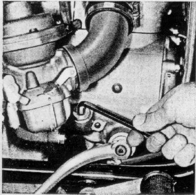
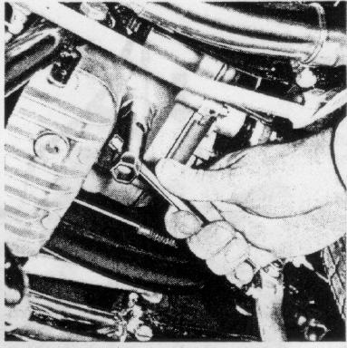

Check oil level every 3000 miles and op up if necessary
with a brand-name oil of the same type to the lowest
thread of the filler opening; to do this,
unscrew the filler plug with an allen wrench (wrench size 8)
make certain filler plug is sufficiently retightened.
Figure 24
24

Oil Change:
Change oil after engine has reached normal operating temperature,
once a year, unscrew oil drain plug (wrench size 19) and then
oil filler plug (allen wrench size 8).
After the old oil has drained, replace the drain plug tightly.
Fill with new oil.
Figure 25
25

Amount of oil
approximately 1.7 pints
Oil level
lowest thread of the filler opening
Type of oil
name-brand hypoid gear oil SAE 90